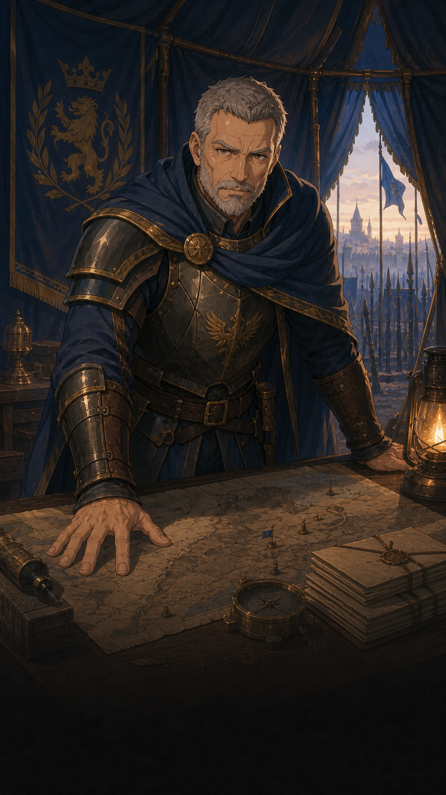

Sept tests des anciens parcours d’évacuation, du messager et du briefing du maréchal ont été retirés : ils dépendaient de lieux retirés du monde initial et du système de quêtes désactivé. Les tests des services génériques, du moteur de quêtes actuel, de réquisition et de parité GPS/simulation sont conservés. Le nettoyage ne modifie aucune règle du jeu. Le test réseau vérifie la cadence entre deux diffusions périodiques, car le premier état est envoyé immédiatement.
Le nouveau moteur à actions propose deux missions à la capitale : Le ravitaillement et Les prospecteurs perdus. Le serveur publie chaque mission uniquement si tous ses lieux existent. Accepter l’une ne masque pas l’autre. Les anciennes quêtes de scénario, de village et de taverne restent désactivées.
Les prospecteurs perdus se joue en solo : recevez l’ordre du maréchal, rejoignez Valgrise, interrogez Armand, examinez deux indices, fouillez le champ de bataille et récupérez le rapport. Les indices sont représentés par des traces de pas sur la carte ; ce visuel ne change pas leurs règles d’apparition ou d’examen. Une victoire officielle contre les forces de la mine, obtenue après le déblocage de cet objectif, permet de libérer et transporter le géologue. Présentez-le à Armand puis confiez-le aux intendants de la capitale et remettez le rapport au maréchal. La réussite donne une seule fois 50 XP et 25 pièces d’or.
Le camp de Valgrise est placé relativement à la capitale dès la préparation, au lieu d’apparaître après une distance de marche. Les lieux sont placés dès la préparation mais leur apparition est définie dans le scénario : le camp à l’acceptation, puis le premier indice après la discussion avec Armand, le deuxième après l’examen du premier, le champ de bataille après le deuxième et la mine après la fouille. Seuls les participants les voient ; la proximité ou la simple lecture du dialogue ne les révèle pas. La présence, les dialogues, les bagages, les transferts et les preuves de victoire sont validés par le serveur avec les mêmes actions en GPS et sur carte fictive. Les objectifs sont sauvegardés ; l’abandon ne donne aucune récompense et ne republie pas la mission au même héros.
Le ravitaillement utilise les villages déjà présents autour de la capitale : Aurive, Ferrières, Boisclair et Rochevive. Chaque village fournit cinq rations, dans un ordre libre, puis les vingt rations sont livrées au fort de Rochegarde. Aucun village supplémentaire n’est créé pour cette mission ; seul le fort est un lieu spécifique au ravitaillement. Une mission annexe consultée ou refusée avec « Plus tard » n’est pas enregistrée dans les quêtes du héros : seule son acceptation validée par le serveur la sauvegarde. Le journal se rafraîchit avec l’état officiel même pendant la gestion ; les missions du moteur présentent la progression, les objectifs et un historique distinct, sans y inscrire les offres non acceptées. Les récompenses et conditions de réussite sont inchangées. Le journal utilise les couleurs des autres menus : fond parchemin clair, texte brun et progression dorée ; les anciens fonds verts sont supprimés, sans changement des règles ni des sauvegardes. Les objets de quête sont réservés à leur instance ; le journal affiche le titre, les actions et le bilan de chaque mission à partir de la projection officielle.
À proximité d’un héros allié, vous pouvez demander une conversation ou un échange. Les deux joueurs doivent valider la même offre ; toute modification annule les validations. Le serveur vérifie puis applique les transferts ensemble.
La préparation inclut les marqueurs de quête, même avec des bâtiments placés manuellement. Les indices portant le rôle clue réservent leur espace même cachés : somme des rayons d’interaction plus 8 unités fictives ou 20 mètres GPS. Une position préférée trop proche est recalculée. Le serveur reconstruit les apparitions et disparitions depuis les instances officielles de quête ; un ancien état de visibilité du monde ne valide aucune action. Le premier indice apparaît après question-chief, le deuxième après inspect-first-trace ; chacun disparaît après son examen. Les objectifs, le combat et les récompenses ne changent pas.
Le champ appearance d’un lieu de scénario distingue placement et apparition : immédiate, à l’acceptation d’une quête ou après une action précise accomplie. Le serveur vérifie le déclencheur, conserve l’état d’apparition dans la sauvegarde et ne transmet pas les lieux ni leurs positions aux joueurs qui ne les ont pas débloqués. Sans ce champ, les lieux placés restent visibles selon la règle habituelle.
Les fiches de quête réutilisent les lieux du scénario et respectent leur placement, leur visibilité et leur cycle de vie. Les conditions locationPlaced et locationVisible permettent d’exiger séparément un emplacement confirmé ou un lieu visible pour le participant. Ravitaillement exige la capitale, le fort et les quatre villages placés avant acceptation. Le serveur refuse une interaction sur un emplacement non confirmé, un lieu encore inconnu ou un élément de quête retiré. Une quête de découverte peut cibler un lieu inconnu sans exiger sa visibilité au départ. Les créations libres de lieux par prerequisites restent à raccorder aux placements différés et à ce contrat ; l’exploration préalable reste prévue.